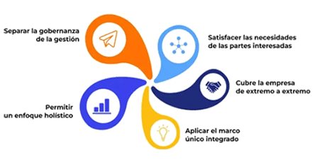
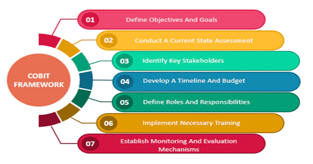

¿Qué es COBIT?
Es un marco de gobernanza de TI desarrollado por ISACA. Proporciona un conjunto integral de controles y mejores prácticas para alinear la estrategia de TI con los objetivos del negocio, gestionar riesgos y asegurar el cumplimiento normativo.La primera versión se lanzó en 1996 y, a lo largo de los años, ha evolucionado para adaptarse a los cambios tecnológicos y de negocio. La versión más reciente, COBIT 2019, incorpora principios de otros marcos como ITIL y NIST, reflejando la naturaleza dinámica del entorno de TI.

COBIT se basa en cinco principios fundamentales que guían su implementación:
- Alineación estratégica: Asegura que las estrategias de TI se correspondan con las necesidades de los stakeholders y los objetivos del negocio.
- Enfoque holístico: Aborda de manera integral todos los procesos de TI, estableciendo claras distinciones entre gobernanza (toma de decisiones y supervisión) y gestión (ejecución operativa).
- Integración de estándares: Combina elementos de diversos marcos y normas, permitiendo una aplicación coherente y completa en la gobernanza de TI.

Beneficios e implementación
- Gestión de riesgos: Facilita la identificación y mitigación de riesgos relacionados con TI.
- Optimización de recursos: Contribuye a una mejor asignación y utilización de recursos, reduciendo costos y redundancias.
- Cumplimiento normativo: Ayuda a asegurar que las prácticas de TI cumplan con estándares y regulaciones como SOX o GDPR.
- Confianza de los stakeholders: Al estandarizar los procesos de TI, mejora la transparencia y genera mayor confianza en la gestión tecnológica.
COBIT se ha consolidado como un pilar en la gobernanza de TI, permitiendo a las organizaciones no solo alinear sus procesos tecnológicos con los objetivos estratégicos, sino también gestionar riesgos y cumplir con exigentes estándares regulatorios. Su enfoque integral y adaptable lo hace especialmente valioso en entornos dinámicos, como el de las instituciones financieras, donde la seguridad, eficiencia y cumplimiento son críticos para el éxito.